Icon Candidates
Denoising Diffusion
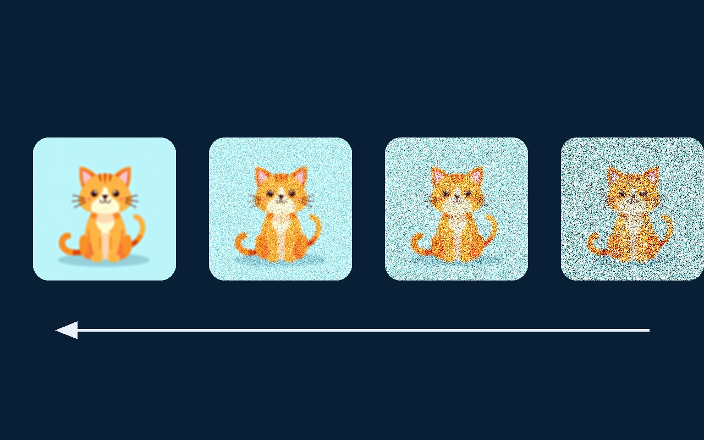
diffusion-cat-1.png — cartoon cat, orange tabby
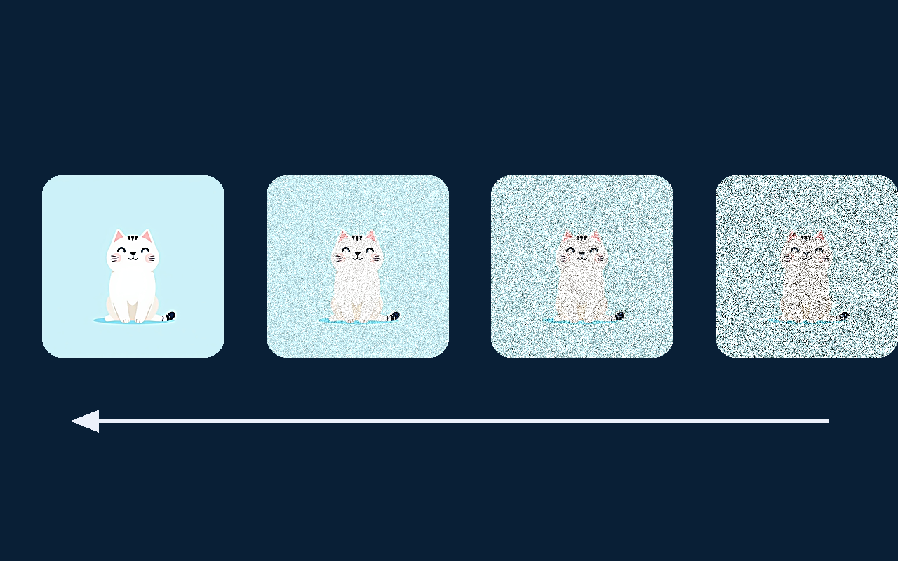
diffusion-cat-2.png — cartoon cat, white (sharpest)
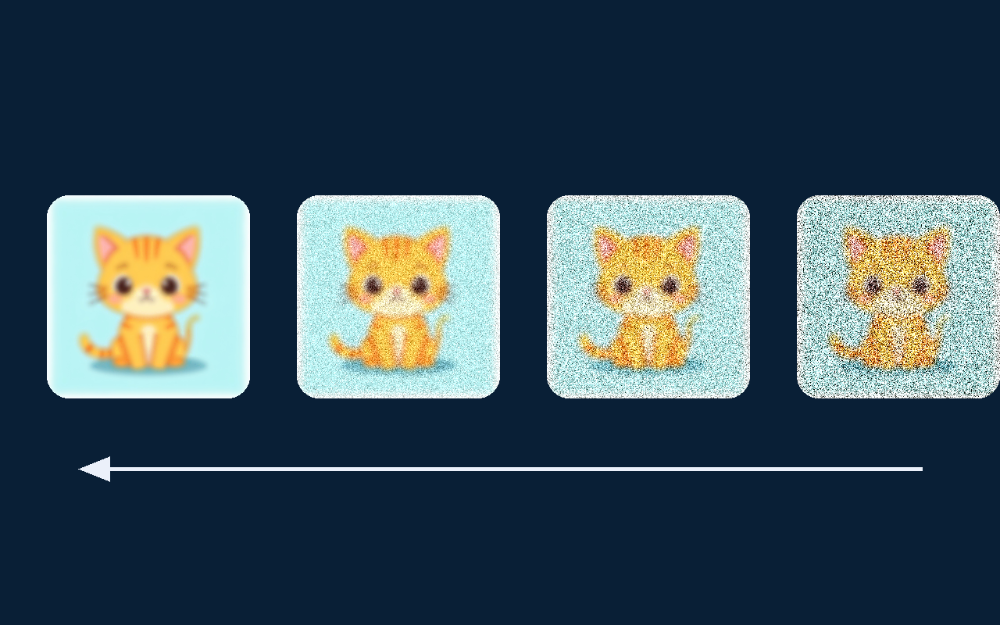
diffusion-cat-3.png — cartoon kitten, chibi
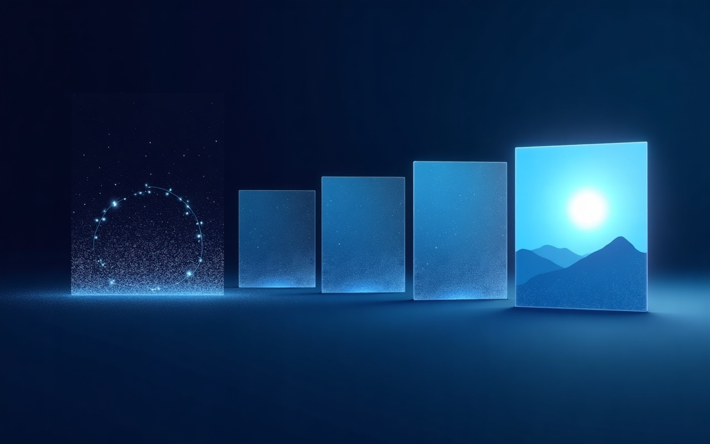
diffusion-persp-1.png — perspective panels
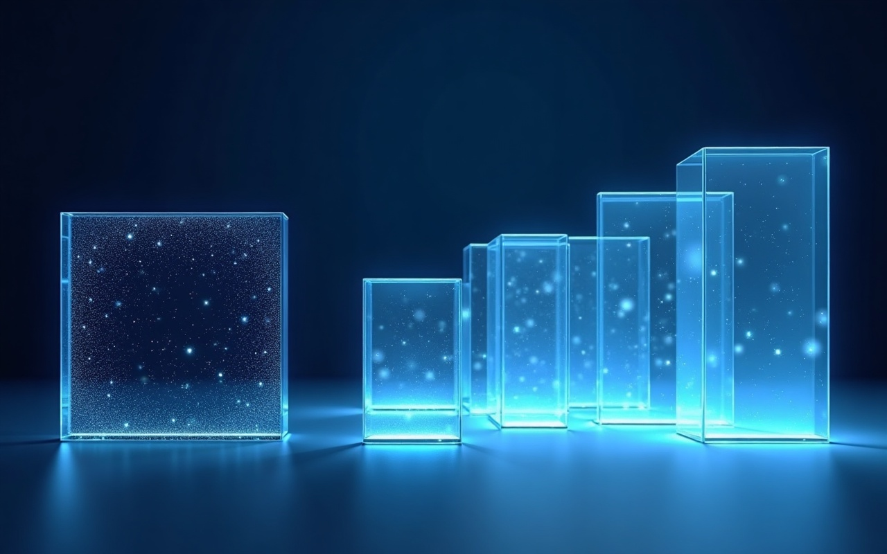
diffusion-persp-2.png — glass slabs
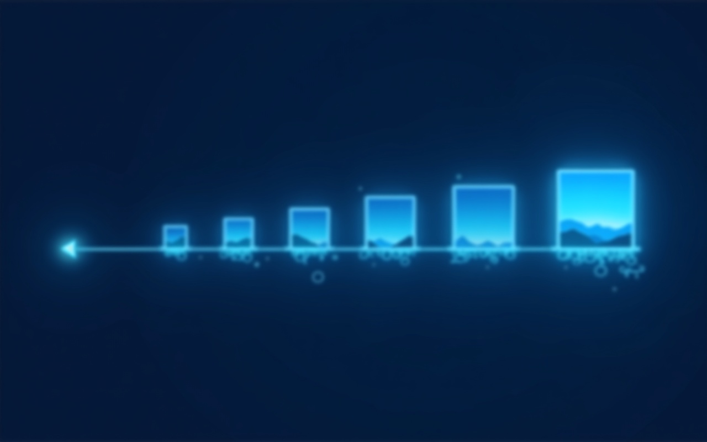
diffusion-persp-3.png — glowing timeline
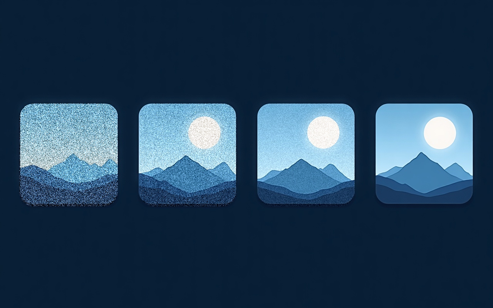
diffusion-flat-panels.png — current live version
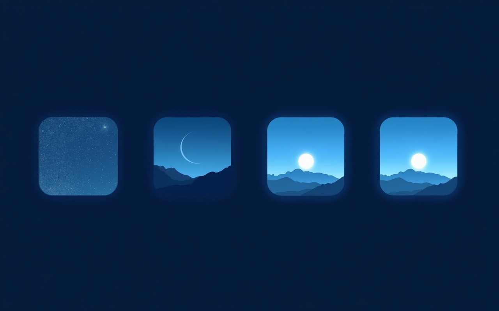
diffusion-flat-alt.png — flat alt (night to day)
Autonomous Weather Trading (distributed)
trading-dist-1.png — server stacks + cloud + trend
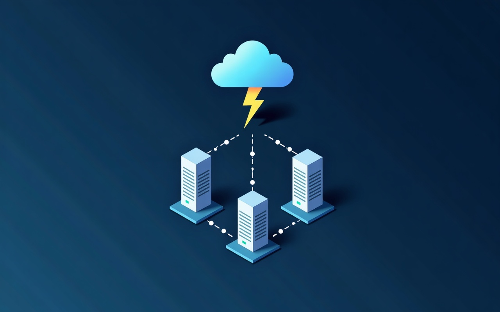
trading-dist-2.png — isometric server triangle
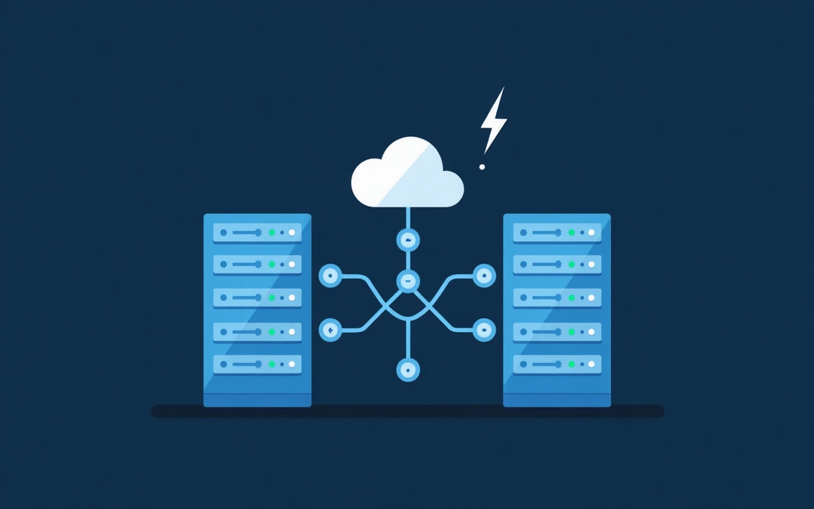
trading-dist-3.png — twin racks + network hub
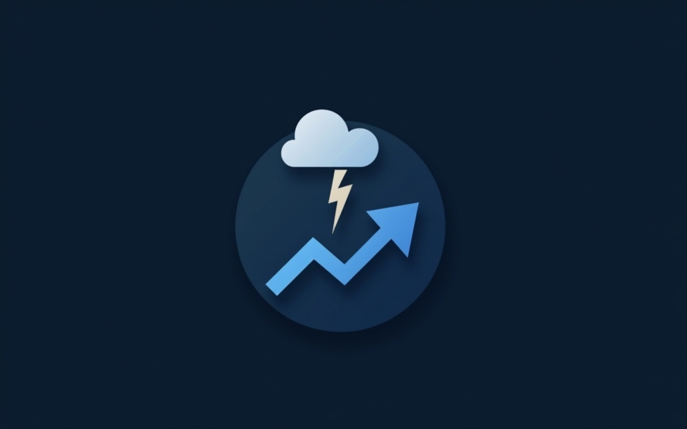
trading-cloud-arrow-current.png — current live version
Transformer Translation
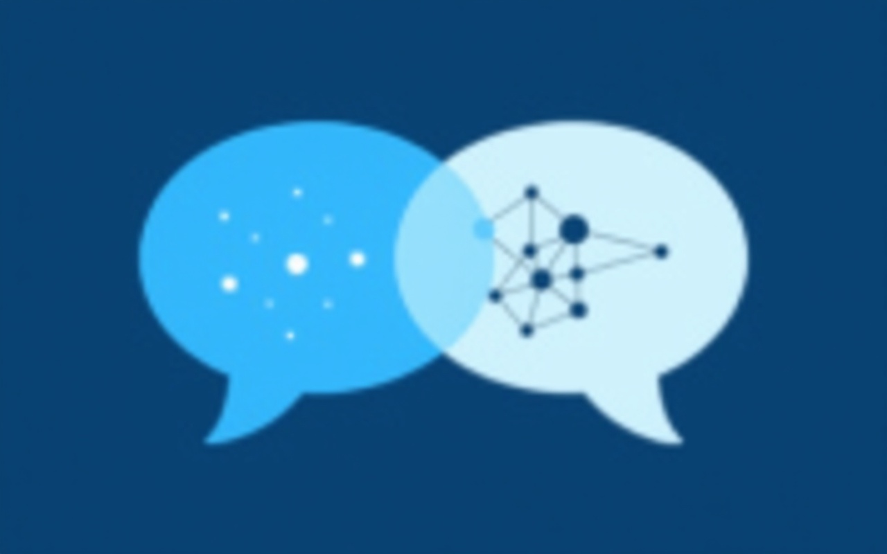
transformer-net-1.png — bubbles + network inside
transformer-net-2.png — bubbles + MLP between
transformer-net-3.png — bubbles + network overlay (blurry)
transformer-bubbles-current.png — current live version
transformer-bubbles-alt.png — earlier alt